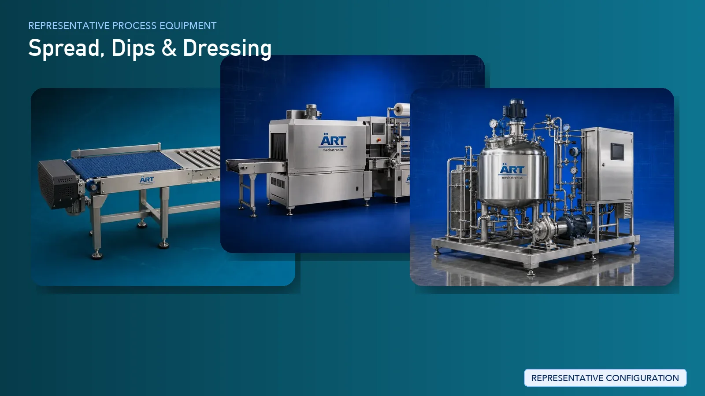

Dips, Spreads & Dressings Manufacturing Plant & Machinery Solutions
Dips, spreads, and dressings are rapidly growing segments in the global food and FMCG industry, including products such as mayonnaise, sandwich spreads, chocolate spreads, cheese dips, salad dressings, and flavored sauces. These products are widely used in households, restaurants, fast food…

About Spread, Dips & Dressing processing
The manufacturing process requires precise ingredient blending, stable emulsification, controlled viscosity, and hygienic processing to ensure consistent taste, texture, and shelf life.
ART Mechatronics provides complete turnkey solutions for dips, spreads, and dressings manufacturing plants, offering advanced systems for mixing, emulsification, homogenization, pasteurization, and packaging. Our solutions are designed for high-quality production, stable emulsions, and efficient large-scale operations for retail and HoReCa markets.
Complete Dips / Spreads / Dressings Process Flow
Ingredients such as oils, water, eggs or egg replacers, stabilizers, flavors, sugar, and spices are received and fed into the system.
Ensures accurate formulation and repeatability.
Ingredients are mixed to form a base mixture.
Ensures uniform blending of ingredients.
Oil and water phases are combined to form a stable emulsion.
Ensures:
- Smooth texture
- Stable product (no separation)
- Creamy texture
- Uniform viscosity
Product is heat-treated to ensure microbial safety.
Ensures:
- Longer shelf life
- Safe consumption
Product is cooled before packaging.
Air bubbles are removed to improve texture and shelf life.
Finished product is stored in hygienic tanks.
Products are packed into jars, bottles, pouches, or sachets.
Suitable for:
- Retail packaging
- Bulk HoReCa supply
Machinery Required for Dips & Spreads Plant
- Material Handling Systems
- Ingredient Dosing System
- Mixing Tank
- High Shear Mixer / Emulsifier
- Homogenizer
- Pasteurization System
- Cooling System
- Storage Tanks
- Filling & Packaging Machines
Turnkey Dips & Spreads Plant Solutions
ART Mechatronics offers complete turnkey solutions for dips, spreads, and dressings manufacturing plants, including:
- Process design & plant layout
- Mixing and emulsification systems
- Homogenization and pasteurization systems
- Storage and packaging systems
- Automation & control panels
- Installation & commissioning
- After-sales support
We customize solutions based on:
- Product type (mayonnaise, spreads, dressings)
- Viscosity and texture requirements
- Production capacity
- Packaging format
Why Choose Art Mechatronics
- Expertise in liquid and semi-solid food processing
- Advanced emulsification and homogenization technology
- Stable product formulation capability
- Hygienic food-grade plant design
- Consistent product quality
- Global export capability
Machinery in a Spread, Dips & Dressing plant
Where it's used
Get pricing & specs for the Spread, Dips & Dressing plant
Share the product, target capacity, current process and plant location. These details help our engineers discuss the right machine or line configuration.
One partner, from design to start-up
ART Mechatronics designs, manufactures, installs and commissions your Spread, Dips & Dressing solution with regional presence in India, UAE and Thailand.